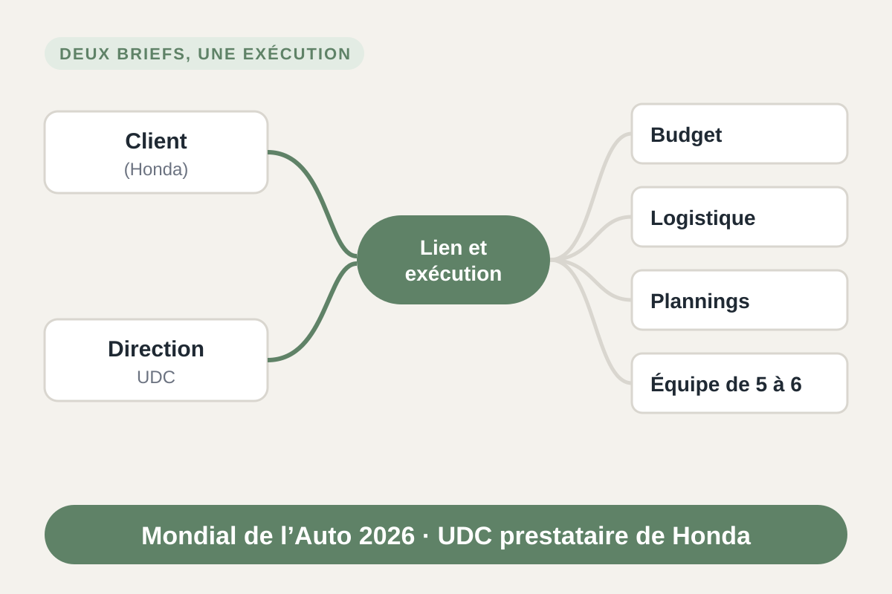

Coordonner Honda et la direction d’UDC au Mondial de l’Auto 2026.
Un client, une direction, une équipe terrain : un seul plan d’exécution.
Au Mondial de l’Auto 2026, UDC était prestataire de Honda. J’ai fait le lien entre Honda et la direction d’UDC, et j’ai porté l’exécution : logistique, budget, plannings, déplacements et une équipe terrain de 5 à 6 personnes.
Le projet en un coup d’œil.

Le brief initial.
Plusieurs sujets devaient avancer en même temps, sans se contredire.
Comment en faire un plan clair pour toute l’équipe ?
J’ai découpé le projet en quatre sujets, chacun avec ses décisions et ses outils.
01 · Dimensionner la logistique.
Choisir le bon véhicule : ni trop petit, ni trop cher.
J’ai mesuré le matériel et testé plusieurs chargements avec un outil de simulation assisté par IA.
Puis j’ai comparé capacité, coût et praticité.

02 · Centraliser la préparation.
Logistique, finance, administratif, équipe : tout avançait en parallèle.
J’ai créé un espace projet commun, organisé par sujet.
Chacun voit ce qui est prêt et ce qui reste à faire.

03 · Suivre le budget et les dépenses.
Chaque dépense devait être suivie pour le budget et pour la comptabilité.
J’ai conçu un outil web qui classe chaque charge deux fois : compte comptable et poste du budget.
Toutes les charges, au même endroit.

Montants et documents réels : confidentiels, non montrés.
04 · Organiser l’équipe et le terrain.
5 à 6 personnes, des horaires différents, des déplacements à organiser.
J’ai géré déplacements, hébergement, accès, horaires et planning de présence.
Chacun avait la bonne information, au bon moment.

Un même projet, plusieurs dimensions à orchestrer.
Analyser, décider, outiller, coordonner, exécuter.
D’un brief ouvert, j’ai fait une méthode réutilisable pour les prochains événements.
Mon rôle et ma démarche uniquement : aucune donnée confidentielle.